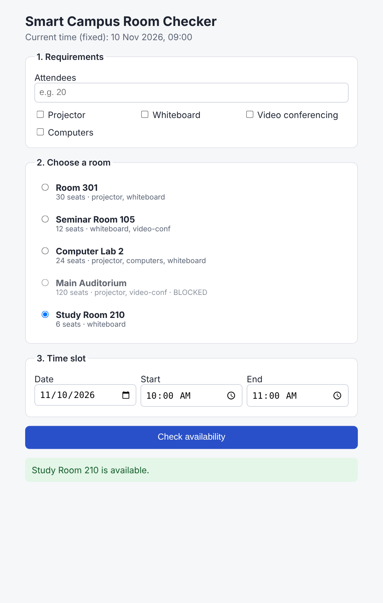
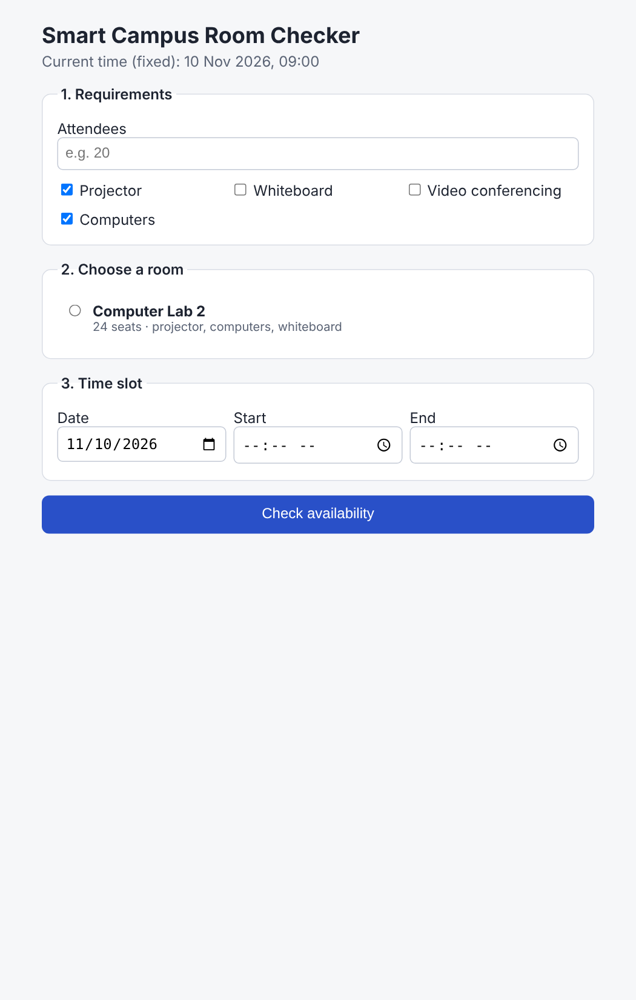
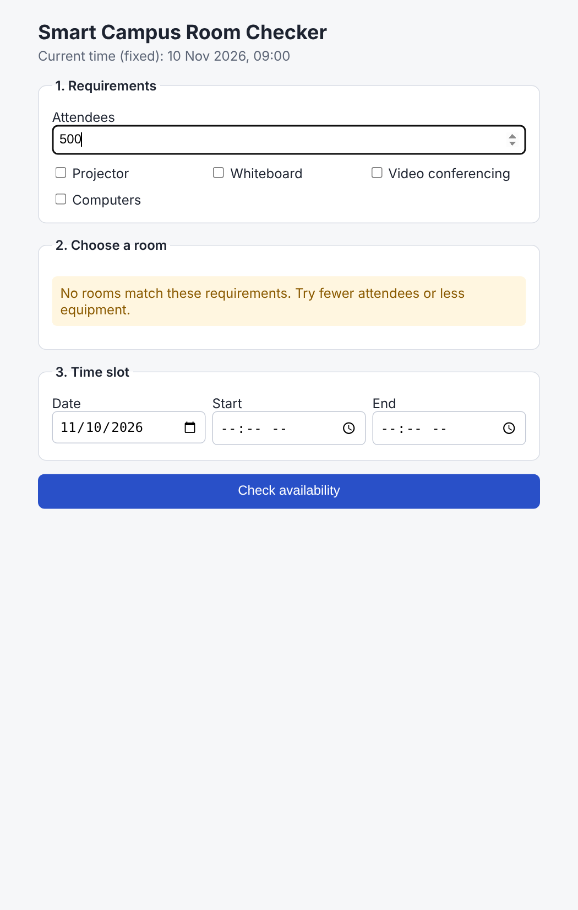
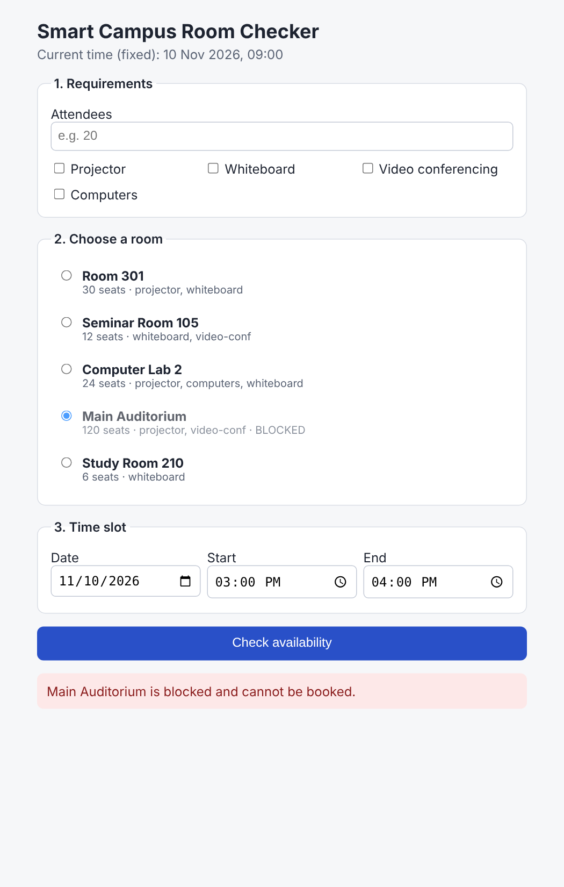
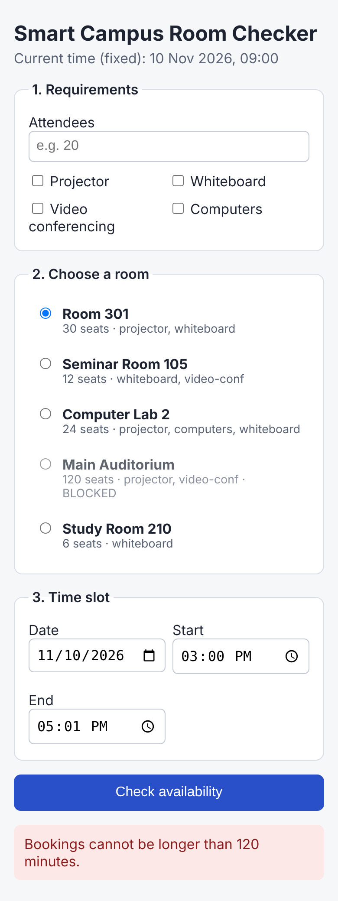
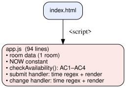
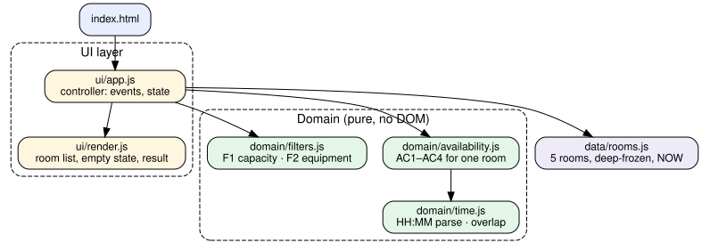

Refactoring, room-catalog feature extension and automated quality evidence
| Full name | Yeraliyeva Anel |
| Student ID | 24B031020 |
| Practice lessons | Tuesday, 18:00 – 19:00 |
| AI assistant used | Claude (Anthropic), model Claude Opus 5.5 |
| Date | 8 November 2026 |
| Live demo | https://claude.ai/artifact/FrjuW8bPsPiKPbPwGoD6WU |
Assignment #03 was not completed, so — as the brief allows — an equivalent minimal version of the single-room prototype was reconstructed first and committed as the baseline (48bd593), so every later change has a recorded starting point.
baseline/app.js — 94 lines: room data, rules and DOM handlers together| ID | Acceptance criterion (preserved) |
|---|---|
| AC1 | Valid times, end after start, start strictly after now |
| AC2 | Max 120 minutes (120 ok, 121 rejected) |
| AC3 | Blocked room cannot be booked |
| AC4 | Overlap rejected, touching intervals allowed |
| AC5 | Booking data is never mutated |
| AC6 | Clear, responsive feedback |
baseline/
index.html form: date, start, end
app.js room data, NOW, checkAvailability(),
submit + change handlers
tests/ AC1–AC5 regression checks
The assignment brief (Lesson 08 slides) and the submission instructions were given verbatim. Because there was no Assignment #03 code, the assistant first reconstructed the minimal baseline from AC1–AC6; that file was then the codebase it analysed.
| # | Risk | Evidence (file / function / line) | Why it matters for this change |
|---|---|---|---|
| R1 | Hard-wired single room | app.js:6 global room; checkAvailability() line 16 r = r || room | Silent fallback to Room 301 — exactly the "checked another room's data" bug the new feature must avoid |
| R2 | Duplicated time validation | Same HH:MM regex in checkAvailability() l.18, submit handler l.65, change handler l.80 | Three places to update; message text also copied 2× |
| R3 | Duplicated result rendering | out.className = res.ok ? … at l.71 and l.86 | New states (blocked, empty, no room) would need edits in both handlers |
| R4 | Mixed responsibilities | Data (l.3–13), rules (l.15–52) and DOM (l.55–91) in one file | Rules cannot be tested without guarding for document; UI cannot be tested at all |
| R5 | Mutable booking data | room.bookings is a plain array (l.9) | AC5 holds only by convention; any future code could push into it |
| P | Step | Fixes |
|---|---|---|
| 1 | Freeze baseline in Git + AC regression tests | safety net |
| 2 | Extract time.js (parse, overlap) | R2 |
| 3 | availability.js: room passed explicitly, no default | R1, R4 |
| 4 | rooms.js catalog, deep-frozen | R1, R5 |
| 5 | filters.js for F1–F3 | new |
| 6 | render.js + app.js controller | R3, R4 |
| 7 | Run all tests + review diff after each step | — |
The simplest way to satisfy F3 was to filter blocked rooms out entirely. Rejected: a user looking for the Main Auditorium would not know why it is missing. Instead the room stays visible with a BLOCKED label, and F3 is enforced where it matters — checkAvailability() returns reason: "blocked". Covered by test AC3/F3.
ui/app.jsThe first generated handler re-validated the slot before deciding whether to refresh — a second copy of AC1 logic, re-creating risk R2. On diff review it was reduced to a single refresh() call; all tests still pass.
| ID | Name | Cap. | Equipment | Blocked | Bookings (10 Nov) |
|---|---|---|---|---|---|
| R301 | Room 301 | 30 | projector, whiteboard | no | 10:00–11:00, 13:00–14:30 |
| R105 | Seminar Room 105 | 12 | whiteboard, video-conf | no | 11:00–12:00 |
| LAB2 | Computer Lab 2 | 24 | projector, computers, whiteboard | no | 09:00–10:30 |
| AUD1 | Main Auditorium | 120 | projector, video-conf | yes | — |
| R210 | Study Room 210 | 6 | whiteboard | no | — |
All data fictional, defined in final/src/data/rooms.js, deep-frozen with Object.freeze.
meetsCapacity(): capacity >= attendees; empty input = no requirementhasAllEquipment(): required.every(...)checkAvailability() never returns ok for themrefresh(), which re-checks with that room's bookings via findRoom()validateSlot() + checkAvailability(room, slot, now)
Study Room 210, 10:00–11:00 → available (green).
Same slot, switched to Room 301 → result refreshes automatically: conflict with "Algorithms lecture".

F2: projector + computers → only Computer Lab 2.

F4: 500 attendees → clear empty-state message.

F3: Main Auditorium, free slot → still "blocked".

AC2/AC6: 15:00–17:01 at 390 px width → error, layout reflows.
Before — 1 module

After — 6 modules in 3 layers

checkAvailability(room, slot, now) has no default room and no DOM access. The baseline fallback r = r || room (R1) is gone, so it is impossible to check a slot against another room's bookings by accident. Purity also lets 22 of the 27 tests run in under 2 ms each without a browser.
time.js owns HH:MM parsing and overlaps(a,b) = aStart < bEnd && bStart < aEnd. One definition replaces three regex copies (R2) and makes the touching-vs-overlap rule explicit. A mutation to <= is caught by the AC4 boundary test.
AC5 is now enforced by the runtime instead of convention (R5): any write to a booking throws TypeError in strict mode, asserted in the AC5 test.
render.js has one renderResult() (R3). app.js keeps selectedId; when filters hide the selected room it is cleared, so a stale result is never shown (F4/F5).
| File | Tests | Covers |
|---|---|---|
availability.test.js | 14 | AC1 (malformed, end<start, past, starts exactly now 09:00 vs 09:01) · AC2 120 vs 121 min · AC3/F3 blocked · AC4 touching 11:00 vs overlapping 10:59, containing · AC5 frozen & unchanged · same slot busy in R301 / free in R210 · no room selected |
filters.test.js | 8 | catalog shape (≥4 rooms, all fields) · F1 exact capacity 12 vs 13 · empty attendees · F2 ALL items (2 cases) · F1+F2 combined · F4 empty list |
ui.test.js | 5 | Integration/UI on real index.html in jsdom: success feedback · F5 room switch refresh · F4 empty state · F1/F2 list update · AC6 error text + viewport |
baseline.test.js | 9 | AC1–AC5 against the original baseline/app.js; 9 tests, 8 pass — starts-now defect |
$ npm install # jsdom@24 dev dependency $ npm run test:baseline # node --test --test-reporter=spec baseline/tests/*.test.js $ npm test # node --test --test-reporter=spec final/tests/*.test.js
✔ AC2 boundary: exactly 120 minutes is allowed ✔ AC2 boundary: 121 minutes is rejected ✔ AC4 boundary: touching interval 11:00–12:00 … allowed ✔ AC4 boundary: overlapping interval 10:59–11:30 rejected ✔ F1 boundary: exact capacity (12) keeps Seminar Room 105 ✔ F1 boundary: insufficient capacity (13) removes … ✔ F5 (UI): switching room refreshes result … ✔ F4 (UI): clear empty state when no rooms match … … (27 lines total, see Appendix E) ℹ tests 27 ℹ pass 27 ℹ fail 0
Baseline suite: 8 / 9 · Final suite: 27 / 27
| Injected bug | Result |
|---|---|
overlaps(): < → <= (touching = overlap) | 26 pass / 1 fail — AC4 touching test |
hasAllEquipment(): every → some | 18 pass / 9 fail — F1, F2 and UI tests |
Both bugs were detected, so the suite checks behaviour rather than just running code. Output saved in docs/evidence/mutation1.txt, mutation2.txt.
1. Re-reading the Assignment #03 AC1 ("start strictly after now") showed the baseline accepted 09:00–09:30 at now = 09:00. Fixed with s <= now → reject and two boundary tests (09:00 rejected, 09:01 accepted). 2. node --test baseline/tests/ failed on Node 22 ("Cannot find module") — a directory is not accepted. Fixed with a file glob in package.json.
| Measure | Original (baseline) | Final | How it was obtained |
|---|---|---|---|
| Automated tests passed / total | 8 / 9 (AC1–AC5 only; starts-now fails) | 27 / 27 (AC1–AC6, F1–F5, UI) | npm run test:baseline, npm test; summary lines in docs/evidence/*-output.txt |
| Duplicated logic locations removed | HH:MM check ×3, result render ×2 | ×1 and ×1 → 3 removed | grep -c '\d{2}:\d{2}' baseline/app.js = 3; grep -c 'out.className = res.ok' = 2; final grep -rc 'HHMM.test\|className = `result' = 1 each |
| Code structure | 1 module (94 lines): data + rules + DOM | 6 modules (194 lines): data · time · availability · filters · render · controller | wc -l; responsibilities from the module diagram (slide 9) |
| UI behaviour testable? | No (handlers inside DOMContentLoaded) | Yes — mountApp(document), 5 jsdom tests | Presence of executable UI tests |
| Remaining limitations |
• Single fixed date/time; bookings cannot be created, only checked · • Equipment names are free strings — no validation that a room's list uses the EQUIPMENT vocabulary ·
• Times use the browser's local time zone · • UI tests use jsdom, not a real browser (layout only checked manually via screenshots) · • No overnight (cross-midnight) slots | ||
Line counts are a size indicator, not a quality score: the final code is larger because it implements five new requirements.
Context. I had not completed Assignment #03, so I first asked Claude to reconstruct a minimal single-room baseline from the acceptance criteria and committed it. I then gave it the full Assignment #04 brief, the submission instructions and that baseline, with the acceptance criteria AC1–AC6, the new rules F1–F5 and the constraints: fictional data only, no login, APIs or database, and no full rewrite. Stating the boundary values explicitly (120/121 minutes, touching vs overlapping, exact vs insufficient capacity) produced tests aimed at the risky edges instead of generic happy paths.
Useful and incorrect suggestions. The most useful output was the risk list, especially the hidden default room in checkAvailability(), which would have let the multi-room version check the wrong room's bookings. Not everything was right: the first input handler duplicated slot validation, recreating the problem the refactor was meant to remove, the first test script used a directory path that Node 22 rejects, and the baseline accepted a booking starting exactly at the current time, which the Assignment #03 AC1 forbids. I also rejected hiding blocked rooms, because users would not understand why a room disappeared.
What I verified. I ran both test suites and read the output, injected two deliberate bugs to confirm the tests fail, opened the app and checked each scenario on the screenshots, and recounted the duplication metrics with grep instead of trusting estimates.
Influence of tests. Writing the baseline regression suite before refactoring meant every structural change could be accepted or rejected on evidence. The mutation checks showed the AC4 boundary test is the only guard for touching intervals, so I kept it as a named boundary case.
Next. I would add real-browser end-to-end tests, validate equipment names against one vocabulary, and support creating bookings with immutable updates.
| Tool / date | Prompt summary | Output used | Problems found | Changes made | Verification |
|---|---|---|---|---|---|
| Claude Opus 5.5 (Anthropic), claude.ai · 8 Nov 2026 | No Assignment #03 code: asked to reconstruct a minimal single-room baseline (AC1–AC6), then for risk analysis and a small plan | Baseline app.js + 8 AC tests; risks R1–R5; 7-step plan | Plan initially hid blocked rooms | Kept blocked rooms visible, flagged | Baseline 8/8 tests; line refs checked in baseline/app.js |
| same session | Implement catalog + F1–F5 one module at a time, keep AC1–AC6 | rooms.js, time.js, availability.js, filters.js, render.js, app.js | Input handler duplicated AC1 validation | Simplified to single refresh() | Tests; diff review; screenshots |
| same session | Write ≥10 tests incl. listed boundaries + one UI check | 3 test files, 27 tests; baseline suite 9 tests | Node 22 test path; AC1 allowed start = now | Glob in package.json; <= check + 2 tests | Checked against A3 AC1 text; 27/27 |
| same session | Confirm tests detect real defects | Two mutation runs | — | Mutations reverted | 26/27 and 18/27 when mutated; 27/27 after revert |
| same session | Draft README and this report | README, slides, diagrams (Graphviz) | — | Reviewed and edited | Metrics recomputed with grep / wc |
Verification sources: test runner output (docs/evidence/), Git history (48bd593 → a78e2e9), headless-Chrome screenshots, Node.js docs for node --test and Object.freeze.
| Required deliverable | Where |
|---|---|
| Working demo (link) | claude.ai/artifact/FrjuW8bPsPiKPbPwGoD6WU |
| Source code — initial and final versions | Appendix B, C · Git 48bd593 → fb0bfe8 |
| README with setup, run and test commands | Appendix A (p. 17) |
| Test files and actual execution results | Appendix D, E · slides 11–12 |
| Analysis / refactoring report, diagrams, quality comparison | Slides 3–13 |
| AI evidence appendix | Slides 5, 14, 15 |
Run locally: npm install · npm test · npm start → localhost:8080/final/
| Checklist item | Status |
|---|---|
| Existing availability rules still work | ✔ AC1–AC6 tests |
| At least four fictional rooms | ✔ 5 rooms |
| Capacity and equipment filters work | ✔ F1/F2 tests |
| At least ten executable tests | ✔ 27 (+9 baseline) |
| Refactoring and evaluation evidence | ✔ slides 9–13 |
| AI use and human review documented | ✔ slides 5, 14, 15 |
1 # Smart Campus Room Availability Checker — Assignment #04 2 3 Author: Yeraliyeva Anel (24B031020) · Software Engineering, KBTU · Practice: Tues ↳ day 18:00–19:00 4 5 AI-assisted evolution of the Assignment #03 single-room prototype into a multi-ro ↳ om checker with 6 capacity/equipment filtering, a refactored module structure and an automated test ↳ suite. 7 Fictional data only. No login, payments, live APIs or database. Fixed current tim ↳ e: **2026-11-10 09:00**. 8 9 **Live demo:** https://claude.ai/artifact/FrjuW8bPsPiKPbPwGoD6WU 10 11 ## Layout 12 13 ``` 14 baseline/ original single-room prototype (initial version) 15 index.html, app.js data + rules + DOM in one file 16 tests/baseline.test.js AC1–AC5 regression checks on the original 17 final/ refactored multi-room version (final version) 18 index.html 19 src/data/rooms.js room catalog (5 rooms, deep-frozen) + fixed NOW 20 src/domain/time.js time parsing + overlap rule (single source of truth) 21 src/domain/availability.js AC1–AC4 rules for ONE room (pure) 22 src/domain/filters.js F1–F3 filtering (pure) 23 src/ui/render.js DOM rendering only 24 src/ui/app.js controller: wires form events to domain + render 25 tests/ availability, filters, ui (jsdom) suites 26 docs/evidence/ saved test outputs and mutation-check results 27 ``` 28 29 ## Setup 30 31 Requires Node.js 18+ (tested with v22) and Python 3 (only for the static server). 32 33 ```bash 34 npm install # installs jsdom (dev dependency for the UI test)
35 ``` 36 37 ## Run 38 39 ES modules need to be served over HTTP (not file://): 40 41 ```bash 42 npm start # python3 -m http.server 8080 43 # open http://localhost:8080/final/ (refactored version) 44 # open http://localhost:8080/baseline/ (original version) 45 ``` 46 47 ## Test 48 49 ```bash 50 npm run test:baseline # 9 AC regression tests against the original prototype (8 ↳ pass) 51 npm test # 27 tests against the final version (AC1–AC6, F1–F5, UI i ↳ ntegration) 52 ``` 53 54 Results recorded on 2026-11-08: baseline **8/9 passed** (the reconstructed baseli ↳ ne accepts a start exactly at "now", which Assignment #03 AC1 forbids), final **2 ↳ 7/27 passed** 55 (full output in `docs/evidence/`). 56 57 ## Git history 58 59 ```bash 60 git log --oneline # baseline commit first, final refactor after it 61 ``` 62 63 ## Acceptance criteria 64 65 | ID | Rule | 66 |----|------| 67 | AC1 | Valid HH:MM times, end after start, start strictly after the fixed curren ↳ t time |
68 | AC2 | Maximum 120 minutes (120 allowed, 121 rejected) | 69 | AC3 | Blocked room cannot be booked | 70 | AC4 | Half-open intervals: touching bookings allowed, overlapping rejected | 71 | AC5 | Booking data is never mutated (catalog is deep-frozen) | 72 | AC6 | Clear, responsive feedback (status region, mobile viewport) | 73 | F1 | Capacity ≥ attendees | 74 | F2 | Room has ALL selected equipment | 75 | F3 | Blocked room never reported available (shown with BLOCKED label) | 76 | F4 | Clear empty state when no rooms match | 77 | F5 | Changing the selected room refreshes the result with that room's bookings ↳ |
1 {
2 "name": "smart-campus-room-checker",
3 "version": "2.0.0",
4 "private": true,
5 "scripts": {
6 "test:baseline": "node --test --test-reporter=spec baseline/tests/*.test.js",
7 "test": "node --test --test-reporter=spec final/tests/*.test.js",
8 "start": "python3 -m http.server 8080"
9 },
10 "devDependencies": {
11 "jsdom": "^24.1.3"
12 }
13 } 1 // Smart Campus Room Availability Checker — BASELINE (Assignment #03 / Practice #
↳ 06 style)
2 // Single room, single file: data, rules and DOM code are mixed together.
3
4 var NOW = "2026-11-10T09:00"; // fixed "current time" for the prototype
5
6 var room = {
7 name: "Room 301",
8 blocked: false,
9 bookings: [ 10 { start: "2026-11-10T10:00", end: "2026-11-10T11:00", title: "Algorithms lect
↳ ure" },
11 { start: "2026-11-10T13:00", end: "2026-11-10T14:30", title: "Club meeting" }
12 ]
13 };
14
15 function checkAvailability(date, startTime, endTime, r) {
16 r = r || room;
17 // AC1: valid time
18 if (!/^\d{2}:\d{2}$/.test(startTime) || !/^\d{2}:\d{2}$/.test(endTime)) {
19 return { ok: false, message: "Please enter a valid start and end time." };
20 }
21 var s = new Date(date + "T" + startTime).getTime();
22 var e = new Date(date + "T" + endTime).getTime();
23 if (isNaN(s) || isNaN(e)) {
24 return { ok: false, message: "Please enter a valid start and end time." };
25 }
26 if (e <= s) {
27 return { ok: false, message: "End time must be after start time." };
28 }
29 if (s < new Date(NOW).getTime()) {
30 return { ok: false, message: "Start time cannot be in the past." };
31 }
32 // AC2: 120 minute max
33 if ((e - s) / 60000 > 120) {
34 return { ok: false, message: "Bookings cannot be longer than 120 minutes." };
35 }
36 // AC3: blocked room
37 if (r.blocked) {
38 return { ok: false, message: r.name + " is blocked and cannot be booked." };
39 }
40 // AC4: overlap (touching intervals are allowed)
41 for (var i = 0; i < r.bookings.length; i++) {
42 var b = r.bookings[i];
43 var bs = new Date(b.start).getTime();
44 var be = new Date(b.end).getTime();
45 if (s < be && bs < e) {
46 return { ok: false, message: "Conflicts with \"" + b.title + "\"." }; 47 }
48 }
49 return { ok: true, message: r.name + " is available." };
50 }
51
52 // ---------- UI (duplicated validation + rendering in two handlers) ----------
53 if (typeof document !== "undefined") {
54 document.addEventListener("DOMContentLoaded", function () {
55 var form = document.getElementById("form");
56 var out = document.getElementById("result");
57 document.getElementById("roomName").textContent = room.name;
58
59 form.addEventListener("submit", function (ev) {
60 ev.preventDefault();
61 var d = document.getElementById("date").value;
62 var st = document.getElementById("start").value;
63 var en = document.getElementById("end").value;
64 // duplicated quick validation (same as AC1 in checkAvailability)
65 if (!/^\d{2}:\d{2}$/.test(st) || !/^\d{2}:\d{2}$/.test(en)) {
66 out.className = "result error";
67 out.textContent = "Please enter a valid start and end time.";
68 return;
69 }
70 var res = checkAvailability(d, st, en);
71 out.className = res.ok ? "result ok" : "result error";
72 out.textContent = res.message;
73 });
74
75 form.addEventListener("change", function () {
76 var d = document.getElementById("date").value;
77 var st = document.getElementById("start").value;
78 var en = document.getElementById("end").value;
79 // duplicated quick validation again
80 if (!/^\d{2}:\d{2}$/.test(st) || !/^\d{2}:\d{2}$/.test(en)) {
81 out.className = "result";
82 out.textContent = "";
83 return;
84 } 85 var res = checkAvailability(d, st, en);
86 out.className = res.ok ? "result ok" : "result error";
87 out.textContent = res.message;
88 });
89 });
90 }
91
92 if (typeof module !== "undefined") {
93 module.exports = { checkAvailability: checkAvailability, room: room, NOW: NOW }
↳ ;
94 } 1 <!doctype html>
2 <html lang="en">
3 <head>
4 <meta charset="utf-8">
5 <meta name="viewport" content="width=device-width, initial-scale=1">
6 <title>Room Checker (baseline)</title>
7 <style>
8 body { font-family: system-ui, sans-serif; max-width: 480px; margin: 2rem auto;
↳ padding: 0 16px; }
9 label { display: block; margin-top: .75rem; }
10 input, button { width: 100%; padding: .5rem; font-size: 1rem; box-sizing: borde
↳ r-box; }
11 button { margin-top: 1rem; }
12 .result { margin-top: 1rem; padding: .75rem; border-radius: 6px; }
13 .ok { background: #e3f6e8; color: #145c2a; }
14 .error { background: #fde8e8; color: #8a1c1c; }
15 </style>
16 </head>
17 <body>
18 <h1>Is <span id="roomName"></span> free?</h1>
19 <p>Current time (fixed): 10 Nov 2026, 09:00</p>
20 <form id="form">
21 <label>Date <input id="date" type="date" value="2026-11-10"></label>
22 <label>Start <input id="start" type="time"></label>
23 <label>End <input id="end" type="time"></label>24 <button type="submit">Check availability</button> 25 </form> 26 <div id="result" class="result" role="status" aria-live="polite"></div> 27 <script src="app.js"></script> 28 </body> 29 </html>
1 // Baseline regression suite: AC1–AC5 run against the ORIGINAL single-room protot
↳ ype.
2 const test = require("node:test");
3 const assert = require("node:assert/strict");
4 const { checkAvailability, room } = require("../app.js");
5
6 const D = "2026-11-10";
7
8 test("AC1: rejects end before start", () => {
9 assert.equal(checkAvailability(D, "12:00", "11:00").ok, false);
10 });
11
12 test("AC1: rejects start in the past (before fixed now 09:00)", () => {
13 assert.equal(checkAvailability(D, "08:00", "08:30").ok, false);
14 });
15
16 test("AC1 (A3 wording): start exactly at now 09:00 is rejected", () => {
17 assert.equal(checkAvailability(D, "09:00", "09:30").ok, false);
18 });
19
20 test("AC2: exactly 120 minutes is allowed", () => {
21 assert.equal(checkAvailability(D, "15:00", "17:00").ok, true);
22 });
23
24 test("AC2: 121 minutes is rejected", () => {
25 assert.equal(checkAvailability(D, "15:00", "17:01").ok, false);
26 });
27
28 test("AC3: blocked room is never available", () => {
29 const blocked = { ...room, blocked: true }; 30 assert.equal(checkAvailability(D, "15:00", "16:00", blocked).ok, false);
31 });
32
33 test("AC4: touching interval (11:00-12:00 after 10:00-11:00) is allowed", () => {
34 assert.equal(checkAvailability(D, "11:00", "12:00").ok, true);
35 });
36
37 test("AC4: overlapping interval (10:30-11:30) is rejected", () => {
38 assert.equal(checkAvailability(D, "10:30", "11:30").ok, false);
39 });
40
41 test("AC5: checking availability does not mutate booking data", () => {
42 const before = JSON.stringify(room.bookings);
43 checkAvailability(D, "10:30", "11:30");
44 checkAvailability(D, "15:00", "16:00");
45 assert.equal(JSON.stringify(room.bookings), before);
46 }); 1 // Room catalog — fictional data only. Deep-frozen so no code path can mutate boo
↳ kings (AC5).
2 export const NOW = "2026-11-10T09:00"; // fixed current time
3
4 export const EQUIPMENT = Object.freeze(["projector", "whiteboard", "video-conf",
↳ "computers"]);
5
6 const deepFreeze = (obj) => {
7 Object.values(obj).forEach((v) => { if (v && typeof v === "object") deepFreeze(
↳ v); });
8 return Object.freeze(obj);
9 };
10
11 export const ROOMS = deepFreeze([
12 {
13 id: "R301", name: "Room 301", capacity: 30, blocked: false,
14 equipment: ["projector", "whiteboard"],
15 bookings: [
16 { start: "2026-11-10T10:00", end: "2026-11-10T11:00", title: "Algorithms le ↳ cture" },
17 { start: "2026-11-10T13:00", end: "2026-11-10T14:30", title: "Club meeting"
↳ }
18 ]
19 },
20 {
21 id: "R105", name: "Seminar Room 105", capacity: 12, blocked: false,
22 equipment: ["whiteboard", "video-conf"],
23 bookings: [
24 { start: "2026-11-10T11:00", end: "2026-11-10T12:00", title: "Thesis defens
↳ e rehearsal" }
25 ]
26 },
27 {
28 id: "LAB2", name: "Computer Lab 2", capacity: 24, blocked: false,
29 equipment: ["projector", "computers", "whiteboard"],
30 bookings: [
31 { start: "2026-11-10T09:00", end: "2026-11-10T10:30", title: "Programming p
↳ ractice" }
32 ]
33 },
34 {
35 id: "AUD1", name: "Main Auditorium", capacity: 120, blocked: true,
36 equipment: ["projector", "video-conf"],
37 bookings: []
38 },
39 {
40 id: "R210", name: "Study Room 210", capacity: 6, blocked: false,
41 equipment: ["whiteboard"],
42 bookings: []
43 }
44 ]);
45
46 export const findRoom = (rooms, id) => rooms.find((r) => r.id === id) || null; 1 // Single source of truth for time parsing (previously duplicated in 3 places).
2 const HHMM = /^([01]\d|2[0-3]):[0-5]\d$/;
3
4 export const isValidHHMM = (value) => typeof value === "string" && HHMM.test(valu
↳ e);
5
6 /** Returns epoch ms for "YYYY-MM-DD" + "HH:MM", or NaN. */
7 export const toMillis = (date, hhmm) => new Date(`${date}T${hhmm}`).getTime();
8
9 export const minutesBetween = (startMs, endMs) => (endMs - startMs) / 60000;
10
11 /** Half-open intervals [aStart,aEnd) and [bStart,bEnd): touching is NOT overlap.
↳ */
12 export const overlaps = (aStart, aEnd, bStart, bEnd) => aStart < bEnd && bStart <
↳ aEnd; 1 // Booking / availability rules AC1–AC4. Pure functions: no DOM, no mutation (AC5
↳ ).
2 import { isValidHHMM, toMillis, minutesBetween, overlaps } from "./time.js";
3
4 export const MAX_MINUTES = 120;
5
6 export const MESSAGES = Object.freeze({
7 invalidTime: "Please enter a valid start and end time.",
8 endBeforeStart: "End time must be after start time.",
9 past: "Start time must be strictly after the current time.",
10 tooLong: `Bookings cannot be longer than ${MAX_MINUTES} minutes.`,
11 noRoom: "Please select a room first."
12 });
13
14 /** AC1 + AC2 (Assignment #03 wording): start strictly after now, end after start
↳ , max 120 min. */
15 export function validateSlot({ date, start, end }, now) {
16 if (!isValidHHMM(start) || !isValidHHMM(end)) return { ok: false, reason: "inva
↳ lid", message: MESSAGES.invalidTime };
17 const s = toMillis(date, start);
18 const e = toMillis(date, end); 19 if (Number.isNaN(s) || Number.isNaN(e)) return { ok: false, reason: "invalid",
↳ message: MESSAGES.invalidTime };
20 if (e <= s) return { ok: false, reason: "order", message: MESSAGES.endBeforeSta
↳ rt };
21 if (s <= new Date(now).getTime()) return { ok: false, reason: "past", message:
↳ MESSAGES.past }; // strictly after now
22 if (minutesBetween(s, e) > MAX_MINUTES) return { ok: false, reason: "duration",
↳ message: MESSAGES.tooLong };
23 return { ok: true, startMs: s, endMs: e };
24 }
25
26 /** AC1–AC4 for ONE room, using only that room's bookings. */
27 export function checkAvailability(room, slot, now) {
28 if (!room) return { ok: false, reason: "no-room", message: MESSAGES.noRoom };
29 const v = validateSlot(slot, now);
30 if (!v.ok) return v;
31 if (room.blocked) return { ok: false, reason: "blocked", message: `${room.name}
↳ is blocked and cannot be booked.` };
32 const conflict = room.bookings.find((b) =>
33 overlaps(v.startMs, v.endMs, new Date(b.start).getTime(), new Date(b.end).get
↳ Time()));
34 if (conflict) return { ok: false, reason: "conflict", message: `${room.name} co
↳ nflicts with "${conflict.title}" (${conflict.start.slice(11)}–${conflict.end.slic
↳ e(11)}).` };
35 return { ok: true, reason: "available", message: `${room.name} is available.` }
↳ ;
36 } 1 // Room filtering rules F1–F3. Pure functions.
2
3 /** F1: capacity >= attendees. Empty/invalid attendees means "no capacity require
↳ ment". */
4 export const meetsCapacity = (room, attendees) => {
5 const n = Number(attendees);
6 return !Number.isFinite(n) || n <= 0 || room.capacity >= n;
7 };
8 9 /** F2: room must contain ALL required items. */
10 export const hasAllEquipment = (room, required = []) => required.every((item) =>
↳ room.equipment.includes(item));
11
12 /**
13 * Rooms matching the user's requirements. Blocked rooms stay in the list but are
14 * flagged (F3: they can never be reported as available — see checkAvailability).
15 */
16 export function filterRooms(rooms, { attendees, equipment = [] } = {}) {
17 return rooms.filter((r) => meetsCapacity(r, attendees) && hasAllEquipment(r, eq
↳ uipment));
18 } 1 // UI presentation only: turns state into DOM. One renderResult() replaces the tw
↳ o copies in the baseline.
2
3 export function renderRoomList(listEl, rooms, selectedId) {
4 listEl.replaceChildren();
5 for (const room of rooms) {
6 const li = listEl.ownerDocument.createElement("li");
7 const label = listEl.ownerDocument.createElement("label");
8 label.className = "room" + (room.blocked ? " blocked" : "");
9 const radio = listEl.ownerDocument.createElement("input");
10 radio.type = "radio";
11 radio.name = "room";
12 radio.value = room.id;
13 radio.checked = room.id === selectedId;
14 const info = listEl.ownerDocument.createElement("span");
15 info.innerHTML = `<strong></strong> <small></small>`;
16 info.querySelector("strong").textContent = room.name;
17 info.querySelector("small").textContent =
18 `${room.capacity} seats · ${room.equipment.join(", ")}${room.blocked ? " ·
↳ BLOCKED" : ""}`;
19 label.append(radio, info);
20 li.append(label);
21 listEl.append(li);
22 } 23 }
24
25 export function renderEmptyState(emptyEl, isEmpty) {
26 emptyEl.hidden = !isEmpty;
27 }
28
29 export function renderResult(resultEl, result) {
30 if (!result) {
31 resultEl.className = "result";
32 resultEl.textContent = "";
33 return;
34 }
35 resultEl.className = `result ${result.ok ? "ok" : "error"}`;
36 resultEl.dataset.reason = result.reason;
37 resultEl.textContent = result.message;
38 } 1 // UI controller: reads the form, calls domain functions, delegates drawing to re
↳ nder.js.
2 import { ROOMS, NOW, findRoom } from "../data/rooms.js";
3 import { filterRooms } from "../domain/filters.js";
4 import { checkAvailability } from "../domain/availability.js";
5 import { renderRoomList, renderEmptyState, renderResult } from "./render.js";
6
7 export function mountApp(doc, { rooms = ROOMS, now = NOW } = {}) {
8 const $ = (id) => doc.getElementById(id);
9 const form = $("form"), list = $("rooms"), empty = $("empty"), result = $("resu
↳ lt");
10 const state = { selectedId: null, checked: false };
11
12 const readCriteria = () => ({
13 attendees: $("attendees").value,
14 equipment: [...doc.querySelectorAll('input[name="equipment"]:checked')].map((
↳ c) => c.value)
15 });
16 const readSlot = () => ({ date: $("date").value, start: $("start").value, end:
↳ $("end").value }); 17
18 function refresh() {
19 const visible = filterRooms(rooms, readCriteria());
20 // selected room filtered out -> drop selection so we never show a stale resu
↳ lt
21 if (!visible.some((r) => r.id === state.selectedId)) state.selectedId = null;
22 renderRoomList(list, visible, state.selectedId);
23 renderEmptyState(empty, visible.length === 0);
24 // F5: result always reflects the currently selected room
25 if (!state.checked) return renderResult(result, null);
26 const room = findRoom(rooms, state.selectedId);
27 renderResult(result, checkAvailability(room, readSlot(), now));
28 }
29
30 list.addEventListener("change", (ev) => {
31 if (ev.target.name === "room") { state.selectedId = ev.target.value; refresh(
↳ ); }
32 });
33 form.addEventListener("input", (ev) => {
34 if (ev.target.name !== "room") refresh(); // filters/time edits re-render imm
↳ ediately
35 });
36 form.addEventListener("submit", (ev) => {
37 ev.preventDefault();
38 state.checked = true;
39 refresh();
40 });
41
42 refresh();
43 return { state, refresh };
44 }1 <!doctype html> 2 <html lang="en"> 3 <head> 4 <meta charset="utf-8"> 5 <meta name="viewport" content="width=device-width, initial-scale=1">
6 <title>Smart Campus Room Checker</title> 7 <link rel="stylesheet" href="src/ui/styles.css"> 8 </head> 9 <body> 10 <main> 11 <h1>Smart Campus Room Checker</h1> 12 <p class="now">Current time (fixed): 10 Nov 2026, 09:00</p> 13 <form id="form" novalidate> 14 <fieldset> 15 <legend>1. Requirements</legend> 16 <label>Attendees <input id="attendees" type="number" min="1" inputmode="num ↳ eric" placeholder="e.g. 20"></label> 17 <div class="equipment"> 18 <label><input type="checkbox" name="equipment" value="projector"> Project ↳ or</label> 19 <label><input type="checkbox" name="equipment" value="whiteboard"> Whiteb ↳ oard</label> 20 <label><input type="checkbox" name="equipment" value="video-conf"> Video ↳ conferencing</label> 21 <label><input type="checkbox" name="equipment" value="computers"> Compute ↳ rs</label> 22 </div> 23 </fieldset> 24 <fieldset> 25 <legend>2. Choose a room</legend> 26 <ul id="rooms" class="rooms"></ul> 27 <p id="empty" class="empty" hidden>No rooms match these requirements. Try f ↳ ewer attendees or less equipment.</p> 28 </fieldset> 29 <fieldset> 30 <legend>3. Time slot</legend> 31 <div class="row"> 32 <label>Date <input id="date" type="date" value="2026-11-10"></label> 33 <label>Start <input id="start" type="time"></label> 34 <label>End <input id="end" type="time"></label> 35 </div> 36 </fieldset> 37 <button type="submit">Check availability</button>
38 </form>
39 <div id="result" class="result" role="status" aria-live="polite"></div>
40 </main>
41 <script type="module">
42 import { mountApp } from "./src/ui/app.js";
43 mountApp(document);
44 </script>
45 </body>
46 </html> 1 /* Layout: single centered column of three numbered fieldsets (requirements → roo
↳ m → time), result below. */
2 :root {
3 --bg: #f5f6f8; --surface: #ffffff; --fg: #1d2330; --muted: #5b6475; --line: #d9
↳ dde5;
4 --accent: #2950c8; --accent-fg: #ffffff; --hover: #eef1f7;
5 --ok-bg: #e3f6e8; --ok-fg: #145c2a; --err-bg: #fde8e8; --err-fg: #8a1c1c; --war
↳ n-bg: #fff4d6; --warn-fg: #7a5200;
6 }
7 @media (prefers-color-scheme: dark) {
8 :root:not([data-theme="light"]) {
9 --bg: #12151c; --surface: #1b2029; --fg: #e6e9ef; --muted: #9aa3b5; --line: #
↳ 2d3442;
10 --accent: #7f9cff; --accent-fg: #0f1320; --hover: #232a36;
11 --ok-bg: #143322; --ok-fg: #9ee6b4; --err-bg: #3a1a1c; --err-fg: #ffb3b3; --w
↳ arn-bg: #352a10; --warn-fg: #f4d27a;
12 color-scheme: dark;
13 }
14 }
15 :root[data-theme="dark"] {
16 --bg: #12151c; --surface: #1b2029; --fg: #e6e9ef; --muted: #9aa3b5; --line: #2d
↳ 3442;
17 --accent: #7f9cff; --accent-fg: #0f1320; --hover: #232a36;
18 --ok-bg: #143322; --ok-fg: #9ee6b4; --err-bg: #3a1a1c; --err-fg: #ffb3b3; --war
↳ n-bg: #352a10; --warn-fg: #f4d27a;
19 color-scheme: dark;
20 } 21 * { box-sizing: border-box; }
22 body { font-family: system-ui, -apple-system, "Segoe UI", sans-serif; margin: 0;
↳ background: var(--bg); color: var(--fg); }
23 main { max-width: 640px; margin: 0 auto; padding-block: 24px; padding-left: max(1
↳ 6px, env(safe-area-inset-left, 0px)); padding-right: max(16px, env(safe-area-inse
↳ t-right, 0px)); }
24 h1 { font-size: 1.5rem; margin: 0 0 .25rem; text-wrap: balance; }
25 .now { color: var(--muted); margin-top: 0; }
26 fieldset { border: 1px solid var(--line); border-radius: 10px; background: var(--
↳ surface); margin: 0 0 16px; padding: 12px 16px; min-width: 0; }
27 legend { font-weight: 600; padding: 0 4px; }
28 label { display: block; margin: 6px 0; }
29 input[type=number], input[type=date], input[type=time] { width: 100%; padding: 8p
↳ x; font-size: 1rem; border: 1px solid var(--line); border-radius: 6px; background
↳ : var(--surface); color: var(--fg); }
30 input:focus-visible, button:focus-visible { outline: 2px solid var(--accent); out
↳ line-offset: 2px; }
31 .equipment { display: grid; grid-template-columns: repeat(auto-fit, minmax(160px,
↳ 1fr)); }
32 .rooms { list-style: none; padding: 0; margin: 0; }
33 .room { display: flex; gap: 10px; align-items: flex-start; padding: 8px; border-r
↳ adius: 6px; cursor: pointer; }
34 .room:hover { background: var(--hover); }
35 .room small { display: block; color: var(--muted); }
36 .room.blocked { opacity: .7; }
37 .row { display: grid; grid-template-columns: repeat(auto-fit, minmax(150px, 1fr))
↳ ; gap: 8px; }
38 .empty { color: var(--warn-fg); background: var(--warn-bg); padding: 10px; border
↳ -radius: 6px; }
39 button { width: 100%; padding: 12px; font-size: 1rem; border: 0; border-radius: 8
↳ px; background: var(--accent); color: var(--accent-fg); cursor: pointer; }
40 .result { margin-top: 16px; padding: 12px; border-radius: 8px; }
41 .result:empty { display: none; }
42 .ok { background: var(--ok-bg); color: var(--ok-fg); }
43 .error { background: var(--err-bg); color: var(--err-fg); } 1 // Regression tests AC1–AC5 against the REFACTORED domain module.
2 import test from "node:test";
3 import assert from "node:assert/strict";
4 import { checkAvailability } from "../src/domain/availability.js";
5 import { ROOMS, NOW, findRoom } from "../src/data/rooms.js";
6
7 const R301 = findRoom(ROOMS, "R301"); // bookings 10:00–11:00, 13:00–14:30
8 const slot = (start, end) => ({ date: "2026-11-10", start, end });
9
10 test("AC1: rejects malformed time", () => {
11 assert.equal(checkAvailability(R301, slot("9am", "10:00"), NOW).reason, "invali
↳ d");
12 });
13 test("AC1: rejects end before start", () => {
14 assert.equal(checkAvailability(R301, slot("12:00", "11:00"), NOW).reason, "orde
↳ r");
15 });
16 test("AC1: rejects start before fixed current time (09:00)", () => {
17 assert.equal(checkAvailability(R301, slot("08:00", "08:30"), NOW).reason, "past
↳ ");
18 });
19 test("AC1 boundary: start exactly at current time (09:00) is rejected", () => {
20 assert.equal(checkAvailability(R301, slot("09:00", "09:30"), NOW).reason, "past
↳ ");
21 });
22 test("AC1 boundary: start one minute after now (09:01) is accepted", () => {
23 assert.equal(checkAvailability(R301, slot("09:01", "09:30"), NOW).ok, true);
24 });
25 test("AC2 boundary: exactly 120 minutes is allowed", () => {
26 assert.equal(checkAvailability(R301, slot("15:00", "17:00"), NOW).ok, true);
27 });
28 test("AC2 boundary: 121 minutes is rejected", () => {
29 assert.equal(checkAvailability(R301, slot("15:00", "17:01"), NOW).reason, "dura
↳ tion");
30 });
31 test("AC3/F3: blocked room is never reported available, even with a free slot", (
↳ ) => {
32 const r = checkAvailability(findRoom(ROOMS, "AUD1"), slot("15:00", "16:00"), NO ↳ W);
33 assert.equal(r.ok, false);
34 assert.equal(r.reason, "blocked");
35 });
36 test("AC4 boundary: touching interval 11:00–12:00 after 10:00–11:00 is allowed",
↳ () => {
37 assert.equal(checkAvailability(R301, slot("11:00", "12:00"), NOW).ok, true);
38 });
39 test("AC4 boundary: overlapping interval 10:59–11:30 is rejected", () => {
40 assert.equal(checkAvailability(R301, slot("10:59", "11:30"), NOW).reason, "conf
↳ lict");
41 });
42 test("AC4: interval fully containing a booking is rejected", () => {
43 assert.equal(checkAvailability(R301, slot("12:45", "14:45"), NOW).reason, "conf
↳ lict");
44 });
45 test("AC5: booking data is immutable (frozen) and unchanged after checks", () =>
↳ {
46 const before = JSON.stringify(ROOMS);
47 checkAvailability(R301, slot("10:30", "11:30"), NOW);
48 checkAvailability(R301, slot("15:00", "16:00"), NOW);
49 assert.equal(JSON.stringify(ROOMS), before);
50 assert.throws(() => { "use strict"; R301.bookings.push({}); }, TypeError);
51 });
52 test("Room-specific data: same slot is busy in R301 but free in R210", () => {
53 const s = slot("10:00", "11:00");
54 assert.equal(checkAvailability(R301, s, NOW).ok, false);
55 assert.equal(checkAvailability(findRoom(ROOMS, "R210"), s, NOW).ok, true);
56 });
57 test("No room selected gives a clear message instead of a crash", () => {
58 assert.equal(checkAvailability(null, slot("15:00", "16:00"), NOW).reason, "no-r
↳ oom");
59 }); 1 // New feature tests F1–F3 (pure filtering logic).
2 import test from "node:test";
3 import assert from "node:assert/strict";
4 import { filterRooms } from "../src/domain/filters.js";
5 import { ROOMS } from "../src/data/rooms.js";
6
7 const ids = (rooms) => rooms.map((r) => r.id).sort();
8
9 test("Catalog has at least four rooms with id, name, capacity, equipment, blocked
↳ , bookings", () => {
10 assert.ok(ROOMS.length >= 4);
11 for (const r of ROOMS) {
12 assert.equal(typeof r.id, "string");
13 assert.equal(typeof r.name, "string");
14 assert.equal(typeof r.capacity, "number");
15 assert.ok(Array.isArray(r.equipment));
16 assert.equal(typeof r.blocked, "boolean");
17 assert.ok(Array.isArray(r.bookings));
18 }
19 });
20 test("F1 boundary: exact capacity (12) keeps Seminar Room 105", () => {
21 assert.ok(ids(filterRooms(ROOMS, { attendees: 12 })).includes("R105"));
22 });
23 test("F1 boundary: insufficient capacity (13) removes Seminar Room 105", () => {
24 assert.ok(!ids(filterRooms(ROOMS, { attendees: 13 })).includes("R105"));
25 });
26 test("F1: empty attendees means no capacity restriction", () => {
27 assert.equal(filterRooms(ROOMS, { attendees: "" }).length, ROOMS.length);
28 });
29 test("F2: room must contain ALL selected equipment (projector + computers -> LAB2
↳ only)", () => {
30 assert.deepEqual(ids(filterRooms(ROOMS, { equipment: ["projector", "computers"]
↳ })), ["LAB2"]);
31 });
32 test("F2: one missing item excludes the room (whiteboard + video-conf -> R105 onl
↳ y)", () => {
33 assert.deepEqual(ids(filterRooms(ROOMS, { equipment: ["whiteboard", "video-conf
↳ "] })), ["R105"]); 34 });
35 test("F1+F2 combined: 25 attendees + projector -> R301, AUD1 (blocked shown, flag
↳ ged)", () => {
36 const out = filterRooms(ROOMS, { attendees: 25, equipment: ["projector"] });
37 assert.deepEqual(ids(out), ["AUD1", "R301"]);
38 assert.equal(out.find((r) => r.id === "AUD1").blocked, true);
39 });
40 test("F4 (logic): impossible requirements return an empty list", () => {
41 assert.deepEqual(filterRooms(ROOMS, { attendees: 500 }), []);
42 }); 1 // Integration / UI behaviour checks: real index.html + app.js in jsdom.
2 import test from "node:test";
3 import assert from "node:assert/strict";
4 import { readFileSync } from "node:fs";
5 import { JSDOM } from "jsdom";
6 import { mountApp } from "../src/ui/app.js";
7
8 const html = readFileSync(new URL("../index.html", import.meta.url), "utf8")
9 .replace(/<script type="module">[\s\S]*?<\/script>/, ""); // mount manually bel
↳ ow
10
11 function setup() {
12 const dom = new JSDOM(html);
13 const doc = dom.window.document;
14 mountApp(doc);
15 const fire = (el, type) => el.dispatchEvent(new dom.window.Event(type, { bubble
↳ s: true }));
16 const set = (id, v) => { doc.getElementById(id).value = v; fire(doc.getElementB
↳ yId(id), "input"); };
17 const pick = (roomId) => { const r = doc.querySelector(`input[name=room][value=
↳ ${roomId}]`); r.checked = true; fire(r, "change"); };
18 const submit = () => doc.getElementById("form").dispatchEvent(new dom.window.Ev
↳ ent("submit", { cancelable: true }));
19 const result = () => doc.getElementById("result");
20 const roomIds = () => [...doc.querySelectorAll("input[name=room]")].map((r) =>
↳ r.value); 21 return { doc, set, pick, submit, result, roomIds, fire };
22 }
23
24 test("UI: successful availability check shows green 'available' feedback", () =>
↳ {
25 const ui = setup();
26 ui.pick("R210"); ui.set("start", "11:00"); ui.set("end", "12:00"); ui.submit();
27 assert.equal(ui.result().className, "result ok");
28 assert.match(ui.result().textContent, /Study Room 210 is available/);
29 });
30
31 test("F5 (UI): switching room refreshes result using the new room's bookings", ()
↳ => {
32 const ui = setup();
33 ui.pick("R210"); ui.set("start", "10:00"); ui.set("end", "11:00"); ui.submit();
34 assert.equal(ui.result().dataset.reason, "available");
35 ui.pick("R301"); // R301 has a 10:00–11:00 lecture
36 assert.equal(ui.result().dataset.reason, "conflict");
37 assert.match(ui.result().textContent, /Algorithms lecture/);
38 });
39
40 test("F4 (UI): clear empty state when no rooms match; selection and result cleare
↳ d", () => {
41 const ui = setup();
42 ui.pick("R301"); ui.set("start", "15:00"); ui.set("end", "16:00"); ui.submit();
43 assert.equal(ui.result().dataset.reason, "available");
44 ui.set("attendees", "500");
45 assert.equal(ui.roomIds().length, 0);
46 assert.equal(ui.doc.getElementById("empty").hidden, false);
47 assert.equal(ui.result().dataset.reason, "no-room");
48 });
49
50 test("F1/F2 (UI): filters update the visible room list", () => {
51 const ui = setup();
52 assert.equal(ui.roomIds().length, 5);
53 const cb = ui.doc.querySelector('input[name=equipment][value=computers]');
54 cb.checked = true; ui.fire(cb, "input");
55 assert.deepEqual(ui.roomIds(), ["LAB2"]); 56 });
57
58 test("AC6 (UI): invalid slot gives clear error text; layout has responsive viewpo
↳ rt", () => {
59 const ui = setup();
60 ui.pick("R301"); ui.set("start", "15:00"); ui.set("end", "17:30"); ui.submit();
61 assert.equal(ui.result().className, "result error");
62 assert.match(ui.result().textContent, /120 minutes/);
63 assert.match(ui.doc.querySelector('meta[name=viewport]').content, /width=device
↳ -width/);
64 });1 ✔ AC1: rejects end before start (0.915905ms) 2 ✔ AC1: rejects start in the past (before fixed now 09:00) (0.140451ms) 3 ✖ AC1 (A3 wording): start exactly at now 09:00 is rejected (0.622197ms) 4 ✔ AC2: exactly 120 minutes is allowed (0.160265ms) 5 ✔ AC2: 121 minutes is rejected (0.090436ms) 6 ✔ AC3: blocked room is never available (0.090489ms) 7 ✔ AC4: touching interval (11:00-12:00 after 10:00-11:00) is allowed (0.821645ms) 8 ✔ AC4: overlapping interval (10:30-11:30) is rejected (0.10644ms) 9 ✔ AC5: checking availability does not mutate booking data (0.278565ms) 10 ℹ tests 9 11 ℹ suites 0 12 ℹ pass 8 13 ℹ fail 1 14 ℹ cancelled 0 15 ℹ skipped 0 16 ℹ todo 0 17 ℹ duration_ms 53.288244 18 19 ✖ failing tests: 20 21 test at baseline/tests/baseline.test.js:16:1 22 ✖ AC1 (A3 wording): start exactly at now 09:00 is rejected (0.622197ms) 23 AssertionError [ERR_ASSERTION]: Expected values to be strictly equal: 24 25 true !== false
26
27 at TestContext.<anonymous> (/home/claude/smart-campus/baseline/tests/baseli
↳ ne.test.js:17:10)
28 at Test.runInAsyncScope (node:async_hooks:214:14)
29 at Test.run (node:internal/test_runner/test:1047:25)
30 at Test.processPendingSubtests (node:internal/test_runner/test:744:18)
31 at Test.postRun (node:internal/test_runner/test:1173:19)
32 at Test.run (node:internal/test_runner/test:1101:12)
33 at async Test.processPendingSubtests (node:internal/test_runner/test:744:7)
↳ {
34 generatedMessage: true,
35 code: 'ERR_ASSERTION',
36 actual: true,
37 expected: false,
38 operator: 'strictEqual',
39 diff: 'simple'
40 }1 2 > smart-campus-room-checker@2.0.0 test 3 > node --test --test-reporter=spec final/tests/*.test.js 4 5 ✔ AC1: rejects malformed time (1.570102ms) 6 ✔ AC1: rejects end before start (0.351365ms) 7 ✔ AC1: rejects start before fixed current time (09:00) (0.085459ms) 8 ✔ AC1 boundary: start exactly at current time (09:00) is rejected (0.06773ms) 9 ✔ AC1 boundary: start one minute after now (09:01) is accepted (0.155164ms) 10 ✔ AC2 boundary: exactly 120 minutes is allowed (0.083794ms) 11 ✔ AC2 boundary: 121 minutes is rejected (0.058098ms) 12 ✔ AC3/F3: blocked room is never reported available, even with a free slot (0.0669 ↳ 97ms) 13 ✔ AC4 boundary: touching interval 11:00–12:00 after 10:00–11:00 is allowed (0.213 ↳ 171ms) 14 ✔ AC4 boundary: overlapping interval 10:59–11:30 is rejected (0.216795ms) 15 ✔ AC4: interval fully containing a booking is rejected (0.089226ms) 16 ✔ AC5: booking data is immutable (frozen) and unchanged after checks (0.321271ms) 17 ✔ Room-specific data: same slot is busy in R301 but free in R210 (0.064969ms)
18 ✔ No room selected gives a clear message instead of a crash (0.079828ms) 19 ✔ Catalog has at least four rooms with id, name, capacity, equipment, blocked, bo ↳ okings (0.658507ms) 20 ✔ F1 boundary: exact capacity (12) keeps Seminar Room 105 (0.238782ms) 21 ✔ F1 boundary: insufficient capacity (13) removes Seminar Room 105 (1.0344ms) 22 ✔ F1: empty attendees means no capacity restriction (0.091081ms) 23 ✔ F2: room must contain ALL selected equipment (projector + computers -> LAB2 onl ↳ y) (0.579032ms) 24 ✔ F2: one missing item excludes the room (whiteboard + video-conf -> R105 only) ( ↳ 0.092113ms) 25 ✔ F1+F2 combined: 25 attendees + projector -> R301, AUD1 (blocked shown, flagged) ↳ (0.083968ms) 26 ✔ F4 (logic): impossible requirements return an empty list (0.055121ms) 27 ✔ UI: successful availability check shows green 'available' feedback (81.152218ms ↳ ) 28 ✔ F5 (UI): switching room refreshes result using the new room's bookings (38.5806 ↳ 7ms) 29 ✔ F4 (UI): clear empty state when no rooms match; selection and result cleared (2 ↳ 4.874604ms) 30 ✔ F1/F2 (UI): filters update the visible room list (12.282114ms) 31 ✔ AC6 (UI): invalid slot gives clear error text; layout has responsive viewport ( ↳ 18.065392ms) 32 ℹ tests 27 33 ℹ suites 0 34 ℹ pass 27 35 ℹ fail 0 36 ℹ cancelled 0 37 ℹ skipped 0 38 ℹ todo 0 39 ℹ duration_ms 553.55755
1 ✖ AC4 boundary: touching interval 11:00–12:00 after 10:00–11:00 is allowed (0.744 ↳ 911ms) 2 ℹ pass 26 3 ℹ fail 1 4 ✖ failing tests: 5 ✖ AC4 boundary: touching interval 11:00–12:00 after 10:00–11:00 is allowed (0.744
↳ 911ms)
1 ✖ F1 boundary: exact capacity (12) keeps Seminar Room 105 (4.567867ms) 2 ✖ F1: empty attendees means no capacity restriction (0.288022ms) 3 ✖ F2: room must contain ALL selected equipment (projector + computers -> LAB2 onl ↳ y) (0.781866ms) 4 ✖ F2: one missing item excludes the room (whiteboard + video-conf -> R105 only) ( ↳ 1.014007ms) 5 ✖ UI: successful availability check shows green 'available' feedback (54.577521ms ↳ ) 6 ✖ F5 (UI): switching room refreshes result using the new room's bookings (10.0140 ↳ 38ms) 7 ✖ F4 (UI): clear empty state when no rooms match; selection and result cleared (1 ↳ 3.554201ms) 8 ✖ F1/F2 (UI): filters update the visible room list (6.931766ms) 9 ✖ AC6 (UI): invalid slot gives clear error text; layout has responsive viewport ( ↳ 6.417976ms) 10 ℹ pass 18 11 ℹ fail 9 12 ✖ failing tests: 13 ✖ F1 boundary: exact capacity (12) keeps Seminar Room 105 (4.567867ms) 14 ✖ F1: empty attendees means no capacity restriction (0.288022ms) 15 ✖ F2: room must contain ALL selected equipment (projector + computers -> LAB2 onl ↳ y) (0.781866ms) 16 ✖ F2: one missing item excludes the room (whiteboard + video-conf -> R105 only) ( ↳ 1.014007ms) 17 ✖ UI: successful availability check shows green 'available' feedback (54.577521ms ↳ ) 18 ✖ F5 (UI): switching room refreshes result using the new room's bookings (10.0140 ↳ 38ms) 19 ✖ F4 (UI): clear empty state when no rooms match; selection and result cleared (1 ↳ 3.554201ms) 20 ✖ F1/F2 (UI): filters update the visible room list (6.931766ms) 21 ✖ AC6 (UI): invalid slot gives clear error text; layout has responsive viewport ( ↳ 6.417976ms)
1 e6e2a8b Theme tokens (light/dark) for UI, single-file demo bundle, live demo link 2 fb0bfe8 Fix AC1: start must be strictly after now (Assignment #03 wording); add b ↳ oundary tests 3 2625ea8 Report: single self-contained PDF with code appendix; clarify reconstruct ↳ ed baseline 4 78a824c Docs: report, diagrams, screenshots, test evidence 5 a78e2e9 Final: room catalog, F1-F5 filtering, refactor into data/domain/ui module ↳ s, 25 tests 6 535bb88 Baseline: fix test script 7 48bd593 Baseline: single-room prototype (Assignment #03) + AC regression tests